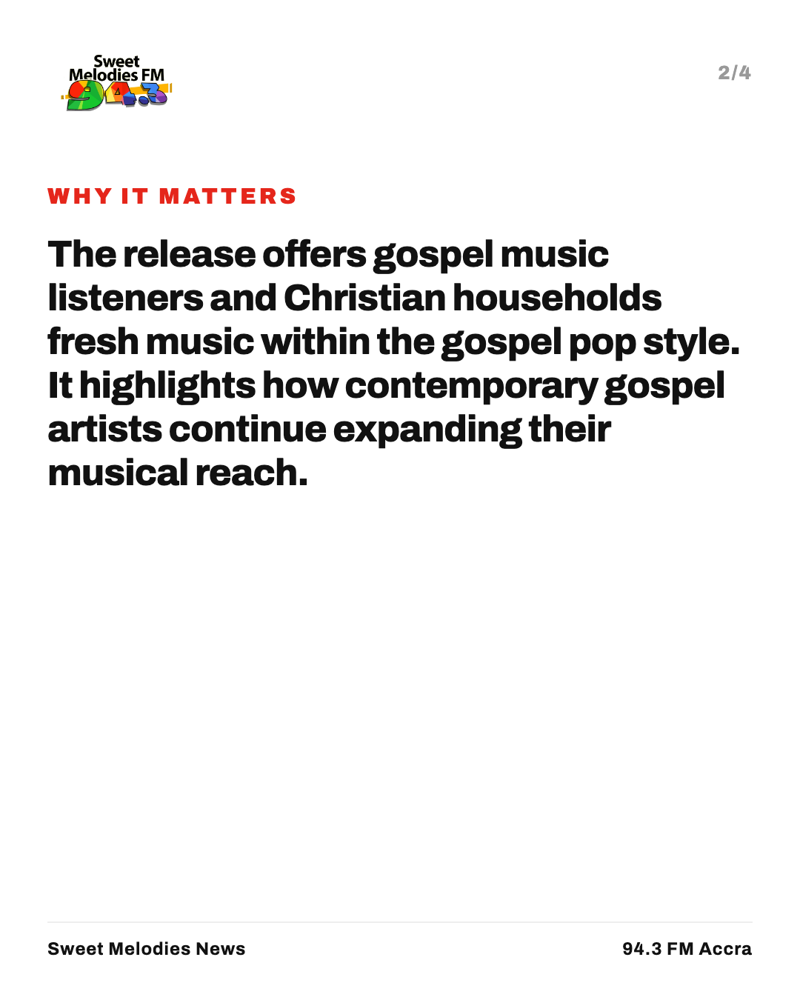
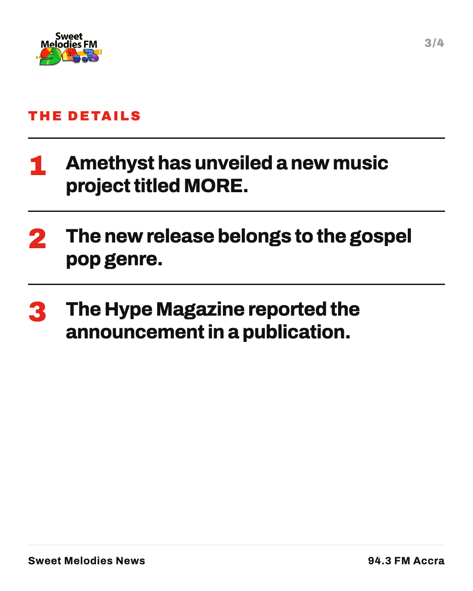
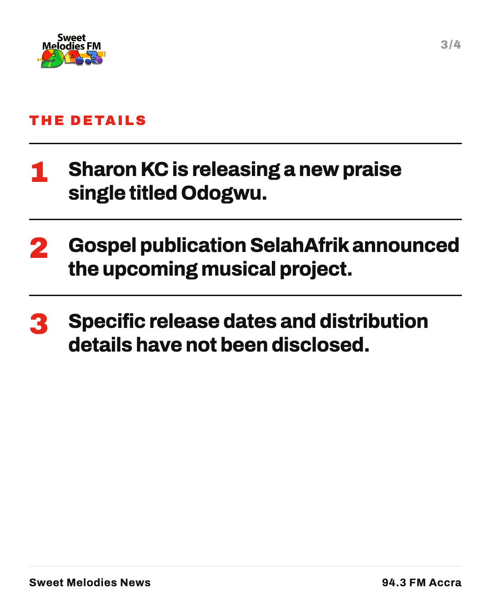

Social
What each story becomes on Instagram, Facebook, X and WhatsApp: a four-slide carousel and a post written for each platform. Scroll the slides sideways.
Night Watch


WhatsApp
*Night Watch* · Wednesday 14 October Welcome to Night Watch on Sweet Melodies 94.3 FM, bringing you calm, truth, and hope this Wednesday evening. _“I will lift up mine eyes unto the hills, from whence cometh my help. My help cometh from the LORD, which made heaven and earth.”_ — Psalms 121:1-2 1. *Theophilus Sunday and 1Spirit Hold Day Two of Tarry Abuja* Theophilus Sunday and 1Spirit lead worshippers through day two of Tarry Abuja, focusing on spiritual growth and evangelism. https://colabourers58-hue.github.io/sweet-melodies-news/story/theophilus-sunday-and-1spirit-hold-day-two-of-tarry-abuja/ 2. *Ohemaa Mercy Ministries holds Tehillah 2025: The Revival Experience* Ohemaa Mercy Ministries hosts Tehillah 2025, bringing the Christian community together for a powerful revival worship experience. https://colabourers58-hue.github.io/sweet-melodies-news/story/ohemaa-mercy-ministries-holds-tehillah-2025-the-revival-experience/ 3. *GRA Clarifies Digital VAT System Will Not Add New Tax* The Ghana Revenue Authority clarifies that its new digital VAT system will not increase prices for existing compliant platforms. https://colabourers58-hue.github.io/sweet-melodies-news/story/gra-clarifies-digital-vat-system-will-not-add-new-tax/ 4. *Fire at Mallam GRIDCo substation disrupts power in parts of Accra* A fire at the Mallam GRIDCo substation caused temporary power disruptions across Lapaz, Awoshie, Anyaa, and surrounding areas. https://colabourers58-hue.github.io/sweet-melodies-news/story/fire-at-mallam-gridco-substation-disrupts-power-in-parts-of-accra/ 5. *Nana Fitz urges GFA and Sports Ministry not to rush Black Stars appointment* Veteran sports administrator Nana Fitz urges officials to take time in selecting the next Black Stars head coach. https://colabourers58-hue.github.io/sweet-melodies-news/story/nana-fitz-urges-gfa-and-sports-ministry-not-to-rush-black-stars-appoin/ *Let us pray* • Lord, grant swift restoration and safety to homes and businesses impacted by power disruptions in Accra. • We pray for wisdom and direction for our national leaders as they make crucial decisions affecting the public. • May God grant peace, financial comfort, and spiritual renewal to every family listening across our nation tonight. Listen live: Sweet Melodies 94.3 FM
New Music Friday


gospel-top-10


Theophilus Sunday and 1Spirit Hold Day Two of Tarry Abuja


X
Theophilus Sunday and 1Spirit held Day 2 of Tarry Abuja on 15 November 2025. Watch the full service online. https://colabourers58-hue.github.io/sweet-melodies-news/story/theophilus-sunday-and-1spirit-hold-day-two-of-tarry-abuja/
Instagram
Day 2 of Tarry Abuja with Theophilus Sunday and 1Spirit took place on 15 November 2025. Watch the full session online now.
Facebook
Gospel minister Theophilus Sunday and 1Spirit hosted Day 2 of Tarry Abuja on 15 November 2025. The full worship video is available to watch. https://colabourers58-hue.github.io/sweet-melodies-news/story/theophilus-sunday-and-1spirit-hold-day-two-of-tarry-abuja/
Whatsapp
*Theophilus Sunday and 1Spirit Hold Day Two of Tarry Abuja* Read about the Day 2 session of Tarry Abuja and watch the full video. {https://colabourers58-hue.github.io/sweet-melodies-news/story/theophilus-sunday-and-1spirit-hold-day-two-of-tarry-abuja/}Ohemaa Mercy Ministries holds Tehillah 2025: The Revival Experience


X
Ohemaa Mercy Ministries has hosted Tehillah 2025: The Revival Experience at The Maker’s House Chapel. Catch up on the service online. #Tehillah2025 https://colabourers58-hue.github.io/sweet-melodies-news/story/ohemaa-mercy-ministries-holds-tehillah-2025-the-revival-experience/
Instagram
Ohemaa Mercy Ministries hosted Tehillah 2025: The Revival Experience at The Maker’s House Chapel on 14th September. The evening featured dedicated worship and the Word.
Facebook
Ohemaa Mercy Ministries held Tehillah 2025: The Revival Experience at The Maker’s House Chapel on Sunday, 14th September, bringing worshippers together for a time of praise and the Word. https://colabourers58-hue.github.io/sweet-melodies-news/story/ohemaa-mercy-ministries-holds-tehillah-2025-the-revival-experience/
Whatsapp
*Ohemaa Mercy Ministries holds Tehillah 2025: The Revival Experience* Ohemaa Mercy Ministries hosted Tehillah 2025 at The Maker’s House Chapel on 14th September. You can watch the full worship session online here: https://colabourers58-hue.github.io/sweet-melodies-news/story/ohemaa-mercy-ministries-holds-tehillah-2025-the-revival-experience/
Pastor Nathaniel Bassey Leads Day 2 of October 2026 Hallelujah Challenge


X
Day 2 of the October 2026 Hallelujah Challenge with Pastor Nathaniel Bassey is available to watch online. {link} https://colabourers58-hue.github.io/sweet-melodies-news/story/pastor-nathaniel-bassey-leads-day-2-of-october-2026-hallelujah-challen/Instagram
Day 2 of the October 2026 Hallelujah Challenge with Pastor Nathaniel Bassey is out now. Watch the full worship session online.
Facebook
Believers joined Pastor Nathaniel Bassey online for Day 2 of the October 2026 Hallelujah Challenge. Watch the full worship service below. https://colabourers58-hue.github.io/sweet-melodies-news/story/pastor-nathaniel-bassey-leads-day-2-of-october-2026-hallelujah-challen/
Whatsapp
*Pastor Nathaniel Bassey Leads Day 2 of October 2026 Hallelujah Challenge* Catch up on the virtual worship gathering here: https://colabourers58-hue.github.io/sweet-melodies-news/story/pastor-nathaniel-bassey-leads-day-2-of-october-2026-hallelujah-challen/
Cuban authorities arrest Protestant pastor over public prayer event

X
Cuban state security agents have arrested Protestant pastor Maikel Pupo Velázquez over a planned prayer gathering in Camagüey province, rights group CSW reported. https://colabourers58-hue.github.io/sweet-melodies-news/story/cuban-authorities-arrest-protestant-pastor-over-public-prayer-event/
Instagram
Cuban state security officers have arrested Protestant pastor Maikel Pupo Velázquez over a cancelled public prayer event. Rights group Christian Solidarity Worldwide says he was held in isolation for nine days while his 16-year-old daughter remains in hospital. Full story: link in bio #Cuba #ReligiousFreedom #ChristianNews #ChurchNews Photo: The Christian Post.
Facebook
A Protestant pastor in Cuba has been detained by state security agents after attempting to notify young believers that a planned prayer gathering had been cancelled. Rights group Christian Solidarity Worldwide reported that Pastor Maikel Pupo Velázquez was held without contact for nine days while his teenage daughter was receiving hospital care for a heart condition. Read the full update on our website. https://colabourers58-hue.github.io/sweet-melodies-news/story/cuban-authorities-arrest-protestant-pastor-over-public-prayer-event/
Whatsapp
*Cuban pastor arrested over prayer event* Pastor Maikel Pupo Velázquez has been detained in Camagüey province after trying to send young worshippers home following an official order. Read full report: https://colabourers58-hue.github.io/sweet-melodies-news/story/cuban-authorities-arrest-protestant-pastor-over-public-prayer-event/
Gospel musician Amethyst releases new project titled MORE



X
Gospel artist Amethyst has unveiled a new gospel pop project titled MORE, according to a report by The Hype Magazine. #GospelMusic https://colabourers58-hue.github.io/sweet-melodies-news/story/gospel-musician-amethyst-releases-new-project-titled-more/
Instagram
Gospel musician Amethyst unveils new project titled MORE. The Hype Magazine reports that the release marks a bold new chapter in gospel pop music. No further track details were provided in the initial report. Full story: link in bio #Amethyst #GospelPop #ChristianMusic #SweetMelodiesFM
Facebook
Gospel artist Amethyst has unveiled a new project titled MORE. According to a report by The Hype Magazine, the release represents a new phase in gospel pop music. Read the full story on our website. https://colabourers58-hue.github.io/sweet-melodies-news/story/gospel-musician-amethyst-releases-new-project-titled-more/
Whatsapp
*Amethyst unveils new gospel pop project MORE* The Hype Magazine reports a new release in gospel pop music. https://colabourers58-hue.github.io/sweet-melodies-news/story/gospel-musician-amethyst-releases-new-project-titled-more/
Sharon KC prepares to release new praise single Odogwu


X
Gospel artist Sharon KC is preparing to release a new praise single titled Odogwu, SelahAfrik reported. https://colabourers58-hue.github.io/sweet-melodies-news/story/sharon-kc-prepares-to-release-new-praise-single-odogwu/
Instagram
Gospel artist Sharon KC is set to drop a new single titled Odogwu. SelahAfrik reported that the upcoming song brings a fresh sound of praise for gospel music followers. Full story: link in bio #GospelMusic #SharonKC #Odogwu #SweetMelodiesFM
Facebook
Gospel music platform SelahAfrik reports that artist Sharon KC is preparing to launch a new praise single titled Odogwu. The publication announced the release as a new sound of praise for listeners. Read the complete story on our website. https://colabourers58-hue.github.io/sweet-melodies-news/story/sharon-kc-prepares-to-release-new-praise-single-odogwu/
Whatsapp
*Sharon KC announces upcoming single Odogwu* SelahAfrik reports that gospel artist Sharon KC is preparing to release a new praise song. https://colabourers58-hue.github.io/sweet-melodies-news/story/sharon-kc-prepares-to-release-new-praise-single-odogwu/
Ukraine Accuses SpaceX of Throttling Starlink Satellite Services

X
Ukraine has accused SpaceX of throttling Starlink satellite services, disrupting military drone operations during Russian missile strikes in Kyiv. https://colabourers58-hue.github.io/sweet-melodies-news/story/ukraine-accuses-spacex-of-throttling-starlink-satellite-services/
Instagram
SpaceX is facing accusations from Ukraine over restricted Starlink satellite internet services. Officials say speed limits placed on terminals disrupted defensive drone missions during deadly missile attacks in Kyiv. Poland, which funds the service, has publicly questioned SpaceX owner Elon Musk. Full story: link in bio #spacex #starlink #ukraine #tech #news Photo: Al Jazeera.
Facebook
Ukrainian authorities have accused SpaceX of placing speed caps on Starlink satellite internet terminals, disrupting critical drone defense operations. The move comes as Kyiv faces renewed missile strikes and growing diplomatic tension. Read the full story on our website. https://colabourers58-hue.github.io/sweet-melodies-news/story/ukraine-accuses-spacex-of-throttling-starlink-satellite-services/
Whatsapp
*Ukraine Accuses SpaceX of Throttling Starlink Satellite Internet* Speed caps placed on satellite terminals disrupted military drone operations during strikes in Kyiv. Read more on Sweet Melodies FM: https://colabourers58-hue.github.io/sweet-melodies-news/story/ukraine-accuses-spacex-of-throttling-starlink-satellite-services/
Houthis hit Saudi Aramco offices as regional conflict escalates

X
Houthis hit a Saudi Aramco administrative site in Dhahran, causing a fire. Saudi air defenses intercepted missiles over Riyadh as airlines suspended flights. #MiddleEast https://colabourers58-hue.github.io/sweet-melodies-news/story/houthis-hit-saudi-aramco-offices-as-regional-conflict-escalates/
Instagram
Houthi strikes hit a Saudi Aramco administrative facility in Dhahran, causing a fire. Saudi forces intercepted missiles over Riyadh, leaving four people injured from falling debris. Major international airlines have cancelled flights across the region as tension rises. Full story: link in bio #MiddleEast #SaudiAramco #WorldNews #FlightSuspensions Photo: Al Jazeera.
Facebook
Houthi forces have attacked a Saudi Aramco administrative building in Dhahran, sparking a fire that emergency crews contained. The strike follows days of escalating exchanges, including missile interceptions over Riyadh and flight suspensions by major global airlines. Financial leaders warn the widening conflict could affect global markets. Read the full update on our website. https://colabourers58-hue.github.io/sweet-melodies-news/story/houthis-hit-saudi-aramco-offices-as-regional-conflict-escalates/
Whatsapp
*Houthi strikes hit Saudi Aramco building in Dhahran* Saudi air defenses intercepted missiles over Riyadh as global airlines suspend regional flights amid rising tension. https://colabourers58-hue.github.io/sweet-melodies-news/story/houthis-hit-saudi-aramco-offices-as-regional-conflict-escalates/
Duane Davis sentenced to 40 years to life for 1996 murder of Tupac Shakur

X
Former gang leader Duane Davis has been sentenced to 40 years to life in prison for organizing the 1996 drive-by shooting of rap icon Tupac Shakur in Las Vegas. https://colabourers58-hue.github.io/sweet-melodies-news/story/duane-davis-sentenced-to-40-years-to-life-for-1996-murder-of-tupac-sha/
Instagram
Former gang leader Duane Davis sentenced for 1996 murder of Tupac Shakur. A Las Vegas judge handed down a sentence of 40 years to life following a guilty verdict in August. The conviction ends nearly three decades of speculation in one of hip-hop's most famous cold cases. Full story: link in bio #TupacShakur #KeffeD #LasVegas #HipHopNews #SweetMelodiesFM Photo: 3News.
Facebook
A Las Vegas court has sentenced 63-year-old Duane Davis to 40 years to life in prison for his role in the 1996 killing of hip-hop star Tupac Shakur. Prosecutors revealed that Davis organized the drive-by shooting following a fight at a Las Vegas hotel. Read the full details on our website. https://colabourers58-hue.github.io/sweet-melodies-news/story/duane-davis-sentenced-to-40-years-to-life-for-1996-murder-of-tupac-sha/
Whatsapp
*Duane Davis Sentenced Over 1996 Tupac Shakur Murder* Former gang leader receives 40 years to life after Las Vegas court ruling. Read full details: https://colabourers58-hue.github.io/sweet-melodies-news/story/duane-davis-sentenced-to-40-years-to-life-for-1996-murder-of-tupac-sha/
High Court dismisses Afenyo-Markin defamation suit against Sammy Gyamfi

X
The High Court in Accra has dismissed a GH¢15m defamation lawsuit filed by Minority Leader Alexander Afenyo-Markin against GoldBod CEO Sammy Gyamfi due to procedural errors. The court made no ruling on the claims themselves. #GhanaNews https://colabourers58-hue.github.io/sweet-melodies-news/story/high-court-dismisses-afenyo-markin-defamation-suit-against-sammy-gyamf/
Instagram
Accra High Court strikes out Afenyo-Markin's GH¢15m defamation suit. The court ruled that the writ against GoldBod CEO Sammy Gyamfi was procedurally defective. Judges clarified that the decision does not determine whether the statements were defamatory. Full story: link in bio #GhanaNews #AfenyoMarkin #SammyGyamfi #GhanaLaw #SweetMelodiesFM Photo: MyJoyOnline.
Facebook
The High Court in Accra has dismissed a GH¢15 million defamation suit filed by Minority Leader Alexander Afenyo-Markin against Ghana Gold Board CEO Sammy Gyamfi over procedural errors. The judge ruled that the writ lacked required particulars, though the court made no finding on whether the alleged comments were defamatory. Read the full story on our website. https://colabourers58-hue.github.io/sweet-melodies-news/story/high-court-dismisses-afenyo-markin-defamation-suit-against-sammy-gyamf/
Whatsapp
*High Court dismisses Afenyo-Markin defamation suit* The court struck out the GH¢15m suit against Sammy Gyamfi due to procedural errors on the writ. Read more: https://colabourers58-hue.github.io/sweet-melodies-news/story/high-court-dismisses-afenyo-markin-defamation-suit-against-sammy-gyamf/
Ghana hosts 10th World Assemblies of God Congress in Accra

X
More than 10,000 delegates gather in Accra as Ghana hosts the 10th World Assemblies of God Congress for the first time in Africa. Evening rallies at Accra Sports Stadium are free to the public. https://colabourers58-hue.github.io/sweet-melodies-news/story/ghana-hosts-10th-world-assemblies-of-god-congress-in-accra/
Instagram
Accra hosts over 10,000 delegates for the 10th World Assemblies of God Congress. The three-day global event features morning leadership sessions and free evening rallies. President John Mahama and international church leaders are attending in the capital. Full story: link in bio #AssembliesOfGod #WorldCongress #Accra #GhanaNews Photo: 3News.
Facebook
Ghana is hosting the 10th World Assemblies of God Congress, bringing over 10,000 international delegates to Accra for the first time on African soil. The three-day event includes free evening revival rallies at the Accra Sports Stadium open to all denominations. Read the full update on our website. https://colabourers58-hue.github.io/sweet-melodies-news/story/ghana-hosts-10th-world-assemblies-of-god-congress-in-accra/
Whatsapp
*Accra hosts 10th World Assemblies of God Congress* Over 10,000 global delegates gather in Ghana for a three-day church congress featuring free evening rallies. Read more: https://colabourers58-hue.github.io/sweet-melodies-news/story/ghana-hosts-10th-world-assemblies-of-god-congress-in-accra/
Theophilus Sunday Hosts Day 2 of Tarry Abuja 2026


X
Theophilus Sunday has hosted Day 2 of Tarry Abuja 2026 tagged Battle Axe. Read details here: https://colabourers58-hue.github.io/sweet-melodies-news/story/theophilus-sunday-hosts-day-2-of-tarry-abuja-2026/
Instagram
Gospel minister Theophilus Sunday has held Day 2 of Tarry Abuja 2026, tagged Battle Axe, focusing on worship and gospel outreach.
Facebook
Gospel minister Theophilus Sunday has held Day 2 of Tarry Abuja 2026, tagged Battle Axe. The gathering focused on worship and kingdom evangelism. https://colabourers58-hue.github.io/sweet-melodies-news/story/theophilus-sunday-hosts-day-2-of-tarry-abuja-2026/
Whatsapp
*Theophilus Sunday Hosts Day 2 of Tarry Abuja 2026* Read more about the Battle Axe session here: https://colabourers58-hue.github.io/sweet-melodies-news/story/theophilus-sunday-hosts-day-2-of-tarry-abuja-2026/